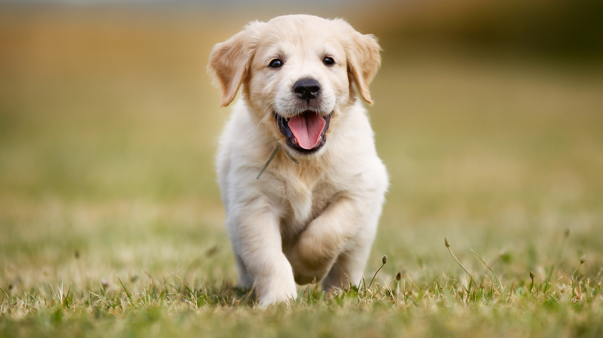

A kutya vagy eb ujjon járó emlős ragadozó állat, a szürke farkas egy már kihalt alfajának háziasított formája. Az egyetlen olyan emlős állatfaj, amely tudományos nevében megkapta a familiaris, azaz a családhoz tartozó jelzőt. A kutyákat szokás a társállatok sorában emlegetni.
A tacskók könnyen felismerhetők tipikus testfelépítésükről: kis lábaik izmos, hosszúra nyúlt testet „cipelnek”. A lelógó fülekkel övezett egyenes fej is a standard tacskóhoz tartozik. Továbbá a fajtára jellemző a testéhez képest hosszú hát, ami miatt viccesen „sausage dognak“ (=kolbászkutya) is nevezik. A rövid lábak ellenére általában nagyon fürgén és gyorsan mozognak. A dakszlik 3 különböző méretben fordulnak elő. A legnagyobb a normál tacskó, amelynek súlya akár a 9 kg-t is elérheti. Nem sokkal kisebb a törpe tacskó 30-35 cm-es mellkasméretével és 6-7 kg-jával. A legkisebb a nyúlász tacskó, aki kb. 30 cm-es mellkasmérettel rendelkezik és max. 3 kg-ot nyom.